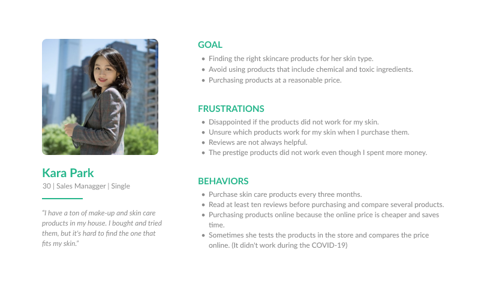

Checkco
Giving a safe and resonable consumption of cosmetic and skincare products shopping experience.
Duration
September 2020
(2 Weeks)
Role
UI/UX Designer
Visual Designer
Team
Personal Project
Overview
Checkco is an app that can check the ingredients of personal care and cosmetic products for those who want to avoid harmful components and chemicals so that users can find the right cosmetics for their skin and protect their skin health. It is the passion project that I conducted the whole process of conducting user interviews and wireframes.
Problems
The companies listed all ingredients, about 10 -20 on the package box, but most people don't know the ingredient's effection since they have to spend much time to search each component. People were disappointed after using the products even though they read through many reviews and compared other products.
Challenges
How might we design the app to provide safety information to users to avoid chemical and harmful ingredients?
How might we give direction to choosing the right cosmetic products for their skin type and concern so that they can save time and money?
Goals
User
- Find the right cosmetic products for their skin type and concern.
- Educate themselves to avoid chemical and harmful ingredients.
Product
- Provide safety information so that users can use the products without worry.
- Help them for reasonable consumption by mentioning their top priority considerations when users purchase cosmetic products.
Research

I interviewed and surveyed 10 participants (7 survey + 3 user interview) who use daily care and cosmetic products. The ages are different between the 20s and 30s, mostly women. Review & Price are top priorities when people purchase cosmetic products. Sometimes reviews are not helpful since people have different skin types and concerns. Ingredients are not their consideration, but people have curious about whether it is harmful or not.
Review & Price are top priorities when people purchase cosmetic products.
Sometimes reviews are not helpful since people have different skin types and concerns.
Ingredients are not their consideration, but people have curious about whether it is harmful or not.
Persona
Storyboard

Sketch
.png)
Lo-Fi Wireframe
png.png)
Solution

 2.png)
Create a user's skin profile.
When users sign up for the app, the app will collect their personal and skin health information so that the app can provide the recommended cosmetic/skincare products on the home screen.

Get recommendation

Scan the barcode or tpye product name

Product

Favorite
Reflection
Usability and accessibility are essential, but credibility is crucial:
This project is related to health, so credible organizations should verify the information so that users can trust the information and purchase the products.
Iteration, Iteration, and Iteration:
I had some new ambiguities and assumptions during the project, but it was helpful to back to the research phase and verify the hypotheses.
Listen to users:
I would like to hear from more users and test if I have a chance since users are the key to developing the products.